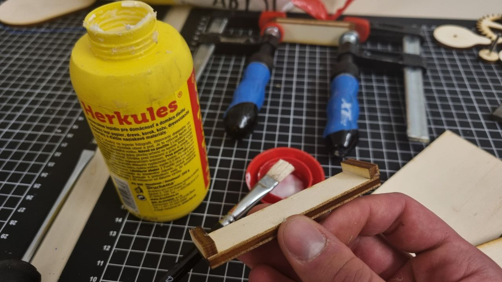
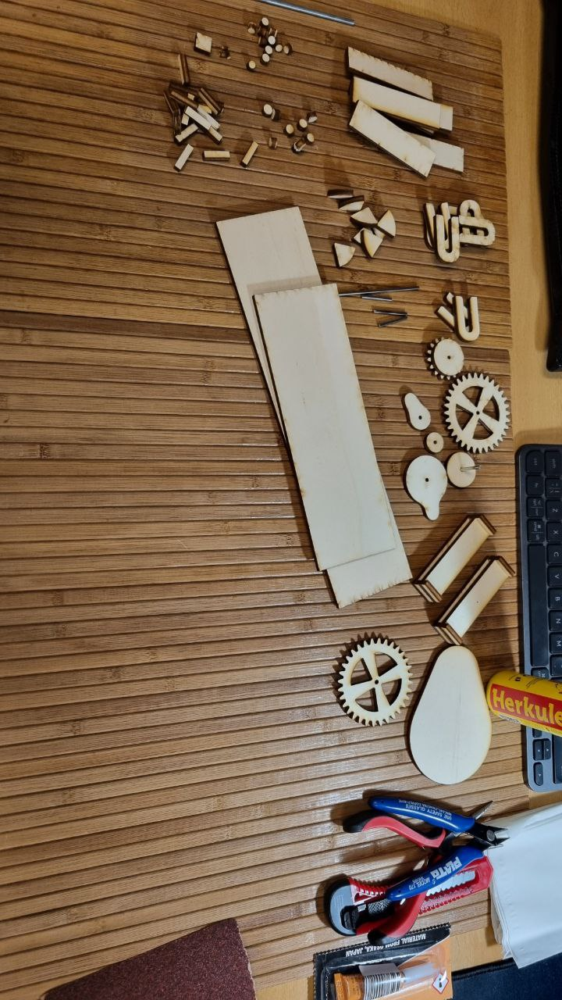
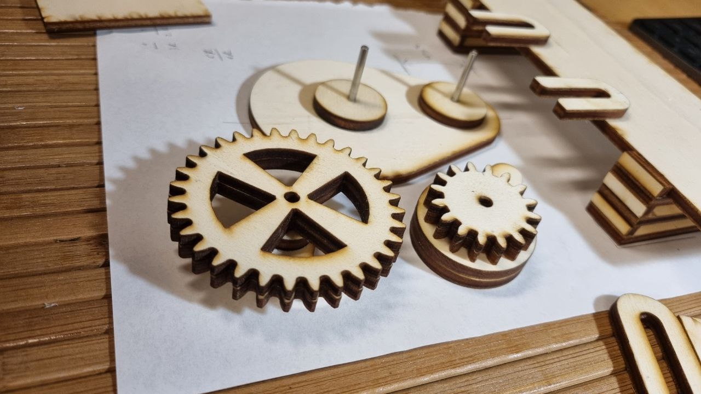
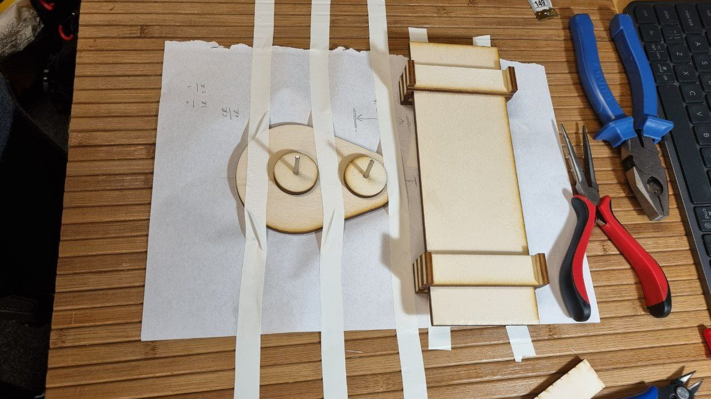
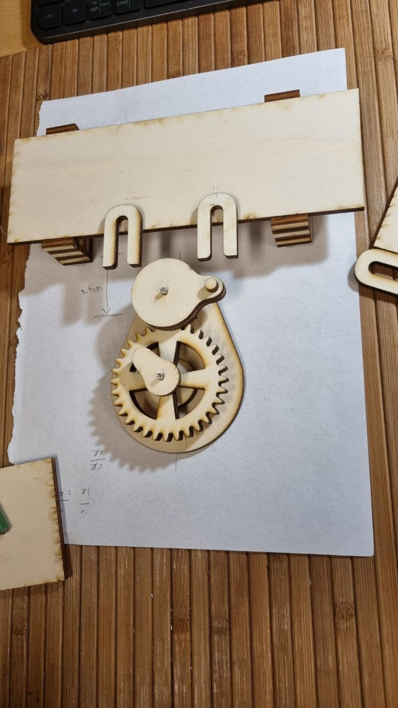

Week 4: Kinematic structures
Creating Conveyor based on the Geneva linear mechanism
Contents
Creating Conveyor based on the Geneva linear mechanism
Conveyor based on the Geneva linear mechanism
Preparation
This week we learned how to create kinematic structures in Fusion360, especially using Add-on for creating gears.
I was inspired by the Linear Geneva mechanism
So I decided to create a conveyor based on the Geneva linear mechanism.
Model design
Here is the model I designed in Fusion360
Model printing and cutting
Firstly I decided to print a few parts to try they matches, especially the wholes for rotation.

I started to glue and assenble some parts to test it.
After that I printed the rest and assembled it at home.


Also I needed to fix this model and the best idea I had was to use a scotch tape!

Here is my test variant:

A result
And finally the result: